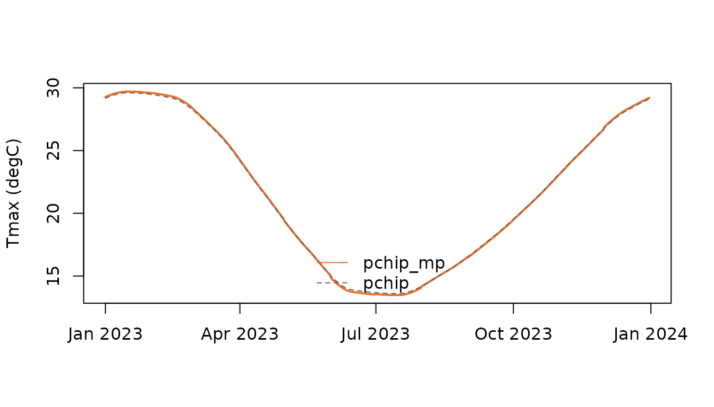

Monthly to daily: tempify integration
Source:vignettes/tempify-integration.Rmd
tempify-integration.RmdWhy densify?
Thermal indices are non-linear in temperature. Applying them to monthly means biases the result; densifying the monthly normals to daily values first reduces (but does not remove) that bias, because daily weather variability is still absent.
Engines
densify_monthly() offers two engines:
-
engine = "tempify": the Python package tempify throughreticulate(reference implementation, six methods). Data cross the R/Python boundary as raw float64 buffers, which avoids any dependence on reticulate’s NumPy ABI support. The tempify version and git commit are stored in the provenance. -
engine = "native": a pure R implementation of"pchip"and"pchip_mp"that reproduces tempify to within 1e-13 degC (tested for 365 and 366 days).
# One-time Python setup (outside R)
# python -m venv ~/.virtualenvs/thermify
# ~/.virtualenvs/thermify/bin/pip install git+https://github.com/djwillichile/tempify
Sys.setenv(RETICULATE_PYTHON = "~/.virtualenvs/thermify/bin/python")
tempify_available()
tempify_version()The pchip_mp algorithm
- Monthly values are placed at mid-month (day
(days_in_month + 1) %/% 2). - A cyclic PCHIP interpolant (two padding nodes on each side) is evaluated for every day.
- Each month’s residual (monthly value minus mean of its daily values) is added uniformly to its days. One pass reproduces the monthly mean exactly.
tmin <- c(11.4, 11.1, 9.2, 6.8, 5.3, 3.9, 3.1, 3.6, 4.6, 6.3, 8.4, 10.3)
tmax <- c(29.6, 29.2, 26.5, 21.9, 17.2, 13.9, 13.6, 15.3, 17.9, 21.2,
24.9, 28.2)
mp <- densify_monthly(tmin, tmax, engine = "native", method = "pchip_mp")
pc <- densify_monthly(tmin, tmax, engine = "native", method = "pchip")
plot(mp$dates, mp$tmax[1, ], type = "l", col = "#E8702A", lwd = 2,
ylab = "Tmax (degC)", xlab = "")
lines(pc$dates, pc$tmax[1, ], col = "grey40", lty = 2)
legend("bottom", c("pchip_mp", "pchip"), col = c("#E8702A", "grey40"),
lty = 1:2, bty = "n")
rbind(pchip = densify_diagnostics(pc$tmax, tmax, pc$dates),
pchip_mp = densify_diagnostics(mp$tmax, tmax, mp$dates))
#> max_abs_mean_error max_boundary_step max_interior_step
#> pchip 0.1584262 0.1641311 0.1666196
#> pchip_mp 0.0000000 0.2729854 0.1666196Plain PCHIP passes through the mid-month values but does not conserve
monthly means. The uniform correction of pchip_mp conserves
them exactly but introduces small steps at month boundaries, reported by
densify_diagnostics(). A smoother mean-preserving scheme
(full Rymes & Myers 2001 neighbour smoothing) would remove those
steps; this is a candidate improvement for tempify.
Physical consistency
tmin and tmax are densified independently.
thermify checks every day for
and stops if the check fails (consistency = "check"). The
alternative consistency = "mean_range" densifies the daily
mean and the diurnal range instead; because the back-transformation is
linear, monthly means of both extremes are still preserved exactly.
Extremes are never swapped or clipped silently.